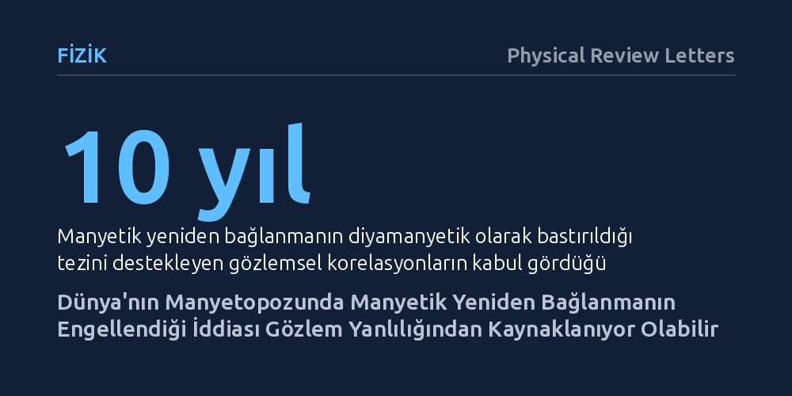

FIZIK · Physical Review Letters · 2026-10-19
Araştırmacılar, Dünya'nın manyetopozunda manyetik yeniden bağlanmayı engellediği düşünülen diyamanyetik bastırma etkisinin gözlemsel bir yanılgıdan kaynaklanıp kaynaklanmadığını inceledi. Bulgular, beklenen düşük hızlı plazma fışkırmalarının ortamdaki çalkantı içinde ayırt edilememesinden doğan tespit yanlılığının, teorik bastırma verilerini fiziksel bir engel olmaksızın taklit edebildiğini gösterdi.
Yıllardır uzay plazmalarında manyetik yeniden bağlanmayı durduran temel mekanizma sanılan etkinin, aslında sadece ölçüm sınırlarından kaynaklanan istatistiksel bir serap olabileceğini gösterir.

Uzay boşluğu sanılanın aksine mutluk bir durgunluk içinde değildir; Güneş'ten sürekli fışkıran yüklü parçacık rüzgarları ile Dünya'nın manyetik kalkanı arasında hiç bitmeyen dinamik bir mücadele yaşanır. Bu mücadelenin en kritik sahnesi, manyetik alan çizgilerinin kırılarak birbiriyle birleştiği ve muazzam miktarda enerjiyi açığa çıkardığı "manyetik yeniden bağlanma" olayıdır. Kutup ışıklarından uyduları tehdit eden jeomanyetik fırtınalara kadar pek çok uzay havası olayının temel motoru bu süreçtir. Ancak plazma fizikçilerinin uzun yıllardır yanıt aradığı temel bir soru bulunmaktadır: Bu güçlü süreç temas eden manyetik alanların her noktasında neden gerçekleşmez ve bazı koşullarda onu aniden durduran mekanizma nedir?
Son on yıldır uzay plazması araştırmalarında kabul gören hâkim görüş, "diyamanyetik bastırma" adı verilen bir etkinin bu süreci kilitlediği yönündeydi. Kurama göre, plazma içindeki parçacıkların basınç farkları nedeniyle oluşturduğu kayma ve sürüklenmeler, manyetik alan çizgilerinin birbirine yaklaşarak kaynaşmasını fiziksel olarak engelliyordu. Uydulardan elde edilen ölçümler de bu öngörüyü destekliyor görünüyordu; manyetik alan açısı ile plazma basıncı arasındaki istatistiksel ilişki tam da kuramın işaret ettiği sınırlarda toplanıyordu. Bu nedenle astrofizikçiler, diyamanyetik bastırmanın gezegen manyetosferlerinden Güneş rüzgarına ve heliopoza kadar evrendeki birincil fren mekanizması olduğuna kesin gözüyle bakıyordu.
Physical Review Letters dergisinde yayımlanan bu yeni çalışma, yerleşik kabulü sorgulayan basit ama temel bir şüpheyle yola çıktı: Acaba uyduların tespit ettiği bu dağılım doğanın koyduğu fiziksel bir sınır değil de, ölçüm cihazlarımızın sınırlarından kaynaklanan bir yanılsama olabilir miydi? Araştırmacılar, Dünya'nın uzaya açılan manyetik sınırı olan manyetopozdaki akım tabakalarını ve buralarda meydana gelmesi beklenen manyetik yeniden bağlanma süreçlerini mercek altına aldılar.
Yazarlar, yeniden bağlanma gerçekleştiğinde iki yana fırlatılan plazma jetlerinin hızını; manyetik alanın geometrik açısı (manyetik makaslama) ve ortamın basınç dengesi (plazma betası) parametrelerini kullanarak kuramsal formüllerle hesapladılar. Ardından, uzay araçlarının bu jetleri gerçekten tespit edip edemeyeceğini belirlemek için hesaplanan hızları, manyetopozun hemen dışındaki çalkantılı manyetokılıf plazmasının doğal hız dalgalanmalarıyla (\sigma v_{msh}) kıyaslayan bir istatistiksel gözlenebilirlik modeli kurdular.
Modelleme sonuçları çarpıcı bir gerçeği gün yüzüne çıkardı: Manyetik makaslama açısının daraldığı veya plazma basıncının yükseldiği koşullarda, manyetik yeniden bağlanma aslında gerçekleşse bile ortaya çıkan plazma jetlerinin hızı belirgin biçimde düşüyordu. Bu düşük hızlı jetler, çevredeki çalkantılı ve türbülanslı plazmanın doğal dalgalanma seviyesinin altında kalıyor, yani ortamın "arka plan gürültüsü" içinde tamamen kayboluyordu.
Sonuç olarak araştırmacılar, uyduların düşük hızlı plazma fışkırmalarını tespit edememesinin, o bölgelerde yeniden bağlanmanın durduğu anlamına gelmediğini ortaya koydu. Literatürde diyamanyetik bastırma lehine yorumlanan istatistiksel sınırın, gerçek bir fiziksel engellemeden değil, sırf ortam gürültüsüne yakın hızdaki jetlerin ölçülememesinden doğan bir gözlem yanlılığından (bias) kaynaklanabileceği anlaşıldı. Yazarların gösterdiği üzere, hiçbir fiziksel bastırma mekanizması olmasa dahi, yalnızca ölçüm sınırlılıkları nedeniyle mevcut istatistiksel korelasyonun aynısı kendiliğinden oluşmaktadır.
Bu bulgu, Dünya'nın manyetopozunda diyamanyetik bastırmanın baskın bir rol oynayıp oynamadığının artık "belirsiz" kaldığını ortaya koyuyor. Bugüne kadar neredeyse tartışmasız bir doğa yasası gibi kabul edilen ve plazma modellerine temel alınan bu sınır ilişkisi, belki de sadece uydularımızın hız ölçüm hassasiyetinin çizdiği yapay bir eşikten ibarettir.
Bu durum diyamanyetik bastırma mekanizmasının doğada hiç var olmadığını kanıtlamasa da, uzay fiziğinde gözlemsel korelasyon ile nedenselliği birbirine karıştırmanın doğurabileceği yanılgıları açıkça sergiliyor. Gezegenlerin manyetik kalkanlarını ve Dünya'yı etkileyen uzay havası olaylarını gerçeğe uygun şekilde modelleyebilmek için, gelecekteki uzay görevlerinde daha duyarlı ölçüm yöntemlerine ve türbülans gürültüsünü doğru filtreleyen yeni analiz yaklaşımlarına ihtiyaç duyulacaktır.